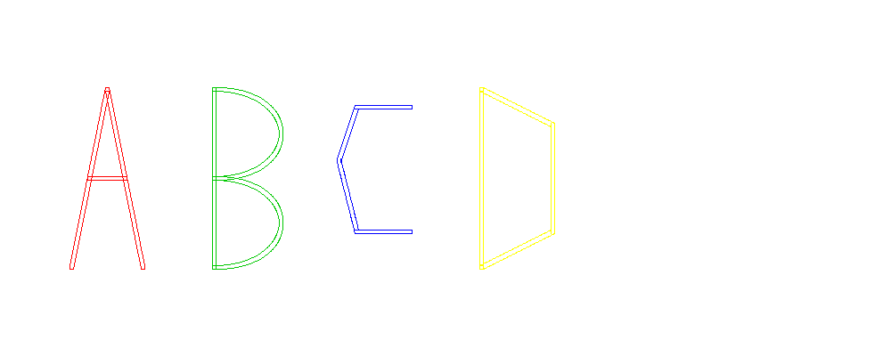
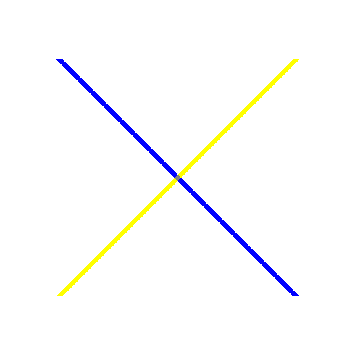
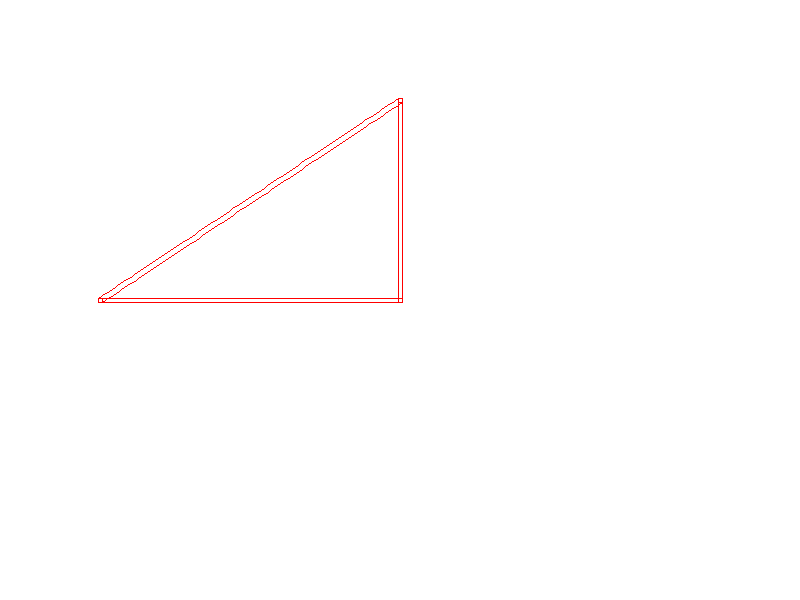
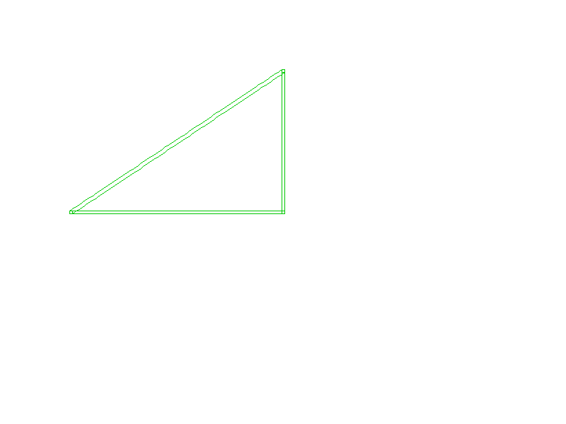
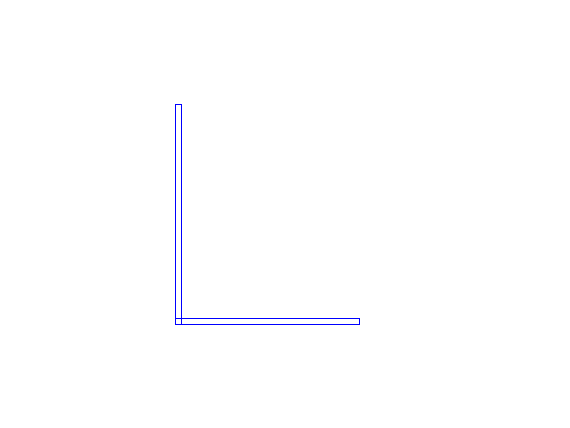
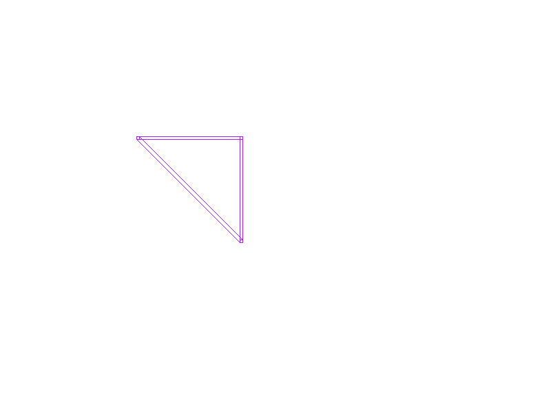
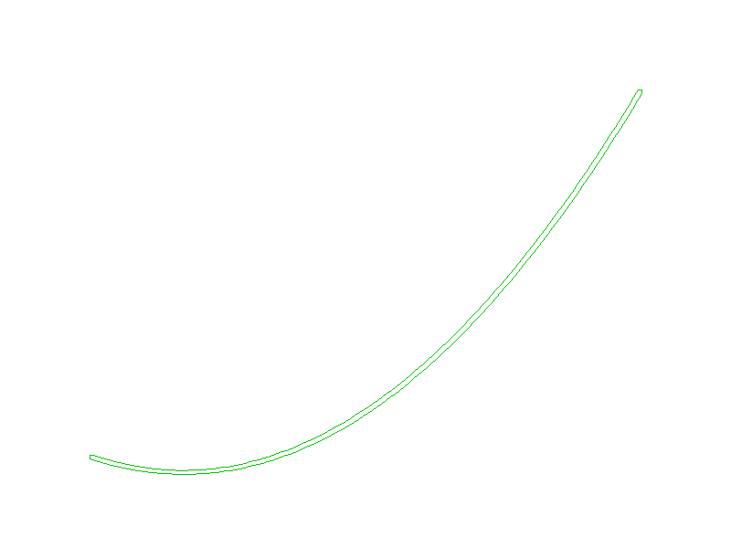
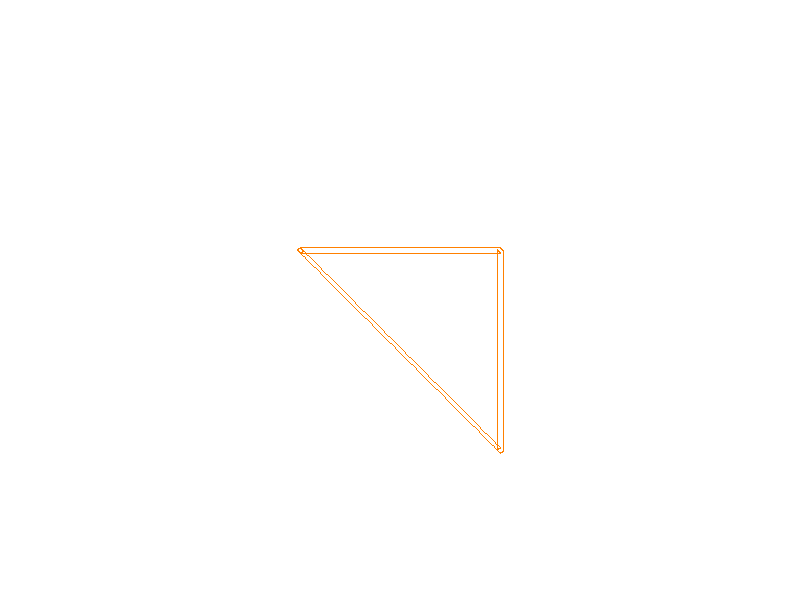
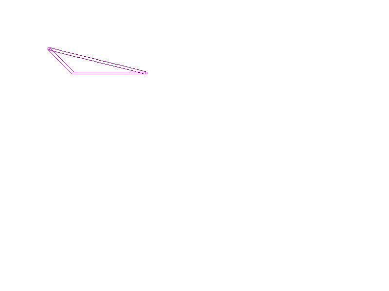
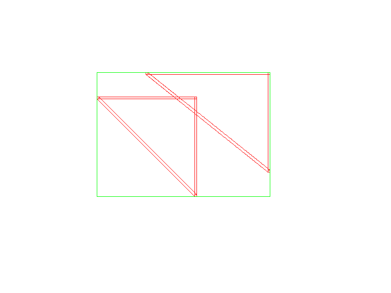

1. ABCD (Colored)

Letters A, B, C, D rendered in distinct colors.
Fn: `moveto` · `lineto` · `pathclose` · `curveto` · `brush_make_square` · `brush_tf_resize` · `draw_shape`
File: abcd.png
2. Letters (TEAM)
Word “TEAM” rendered with blue brush.
Fn: `moveto` · `lineto` · `brush_make_square` · `brush_tf_resize` · `draw_shape`
File: letters.png
3. Spans (Letter I)
Pixel-art letter “I” rendered via manual spans.
Fn: `knots_init` · `create_image` · `span_list_create` · `span_list_add` · `render_spans_to_image` · `save_bmp`
File: spans.bmp
4. X (Blue/Yellow)

Diagonal blue and yellow bars; overlap shows grey mixed color (subtractive color mixing is used).
Fn: `knots_init` · `create_image` · `span_list_create` · `span_list_add` · `color_mixer` · `render_spans_to_image` · `save_png`
File: xspan.png
1. Sharp Corner

Polygon path with 90° sharp corners, demonstrating sharp angle rendering effects.
Fn: `moveto` · `lineto` · `pathclose` · `brush_make_square` · `brush_tf_resize` · `draw_shape`
File: sharp_corner.png
2. Color Change

Same geometry as the sharp corner example, but using green color instead of red.
Fn: `moveto` · `lineto` · `pathclose` · `brush_make_square` · `brush_tf_resize` · `draw_shape`
File: color_change.png
3. Letter L

Blue letter “L” drawn with spans API.
Fn: `moveto` · `lineto` · `pathclose` · `brush_make_square` · `brush_tf_resize` · `draw_shape`
File: letter_l.png
4. Relative

Right triangle generated using relative coordinates (rlineto + pathclose).
Fn: `moveto` · `rlineto` · `pathclose` · `brush_make_square` · `draw_shape`
File: relative.png
5. Quadratic

Single quadratic Bézier curve, demonstrating curve rendering functionality.
Fn: `moveto` · `curveto` · `brush_make_square` · `draw_shape`
File: quadratic.png
6. Transform

Right triangle with applied transformations, demonstrating geometric transformation functionality.
Fn: `moveto` · `lineto` · `pathclose` · `brush_make_square` · `brush_tf_resize` · `brush_tf_rotate` · `brush_tf_translate` · `brush_tf_reflect` · `brush_tf_shear` · `draw_shape`
File: transform.png
7. Misc

Miscellaneous API demo – purple triangle built using rmoveto and pathclose.
Fn: `moveto` · `rmoveto` · `lineto` · `pathclose` · `brush_make_square` · `brush_tf` · `color_mixer` · `draw_shape`
File: misc.png
8. Boolean (Union)

Demonstrates union / intersection operations and bounding-box overlay.
Fn: `moveto` · `lineto` · `pathclose` · `brush_make_square` · `brush_tf_resize` · `draw_shape` · `brush_stroke_list_create` · `brush_stroke_list_add` · `union_brush_stroke` · `intersection_brush_stroke` · `rasterize` · `bounding_box` · `set_pixel`
File: boolean_union.png